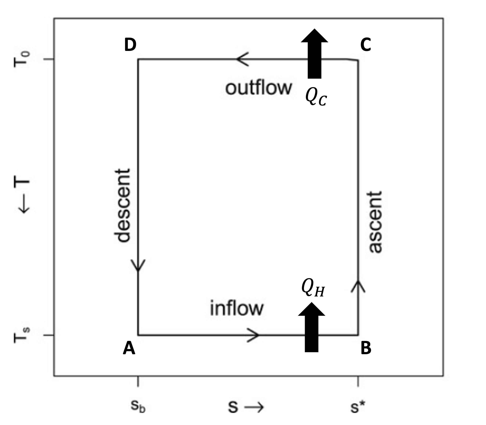
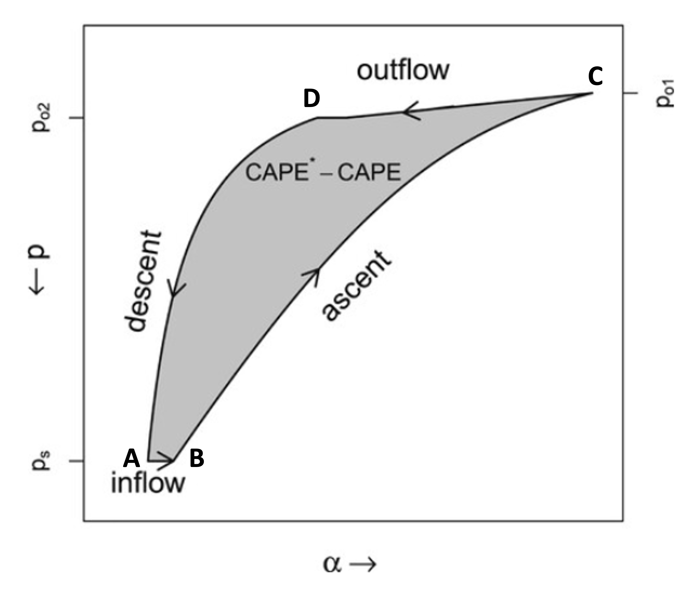

Potential intensity is usually written two ways — as a Carnot heat-engine efficiency acting on the air–sea enthalpy disequilibrium, and as a difference of convective available potential energies. They look unrelated but, under certain approximations, are equivalent.
The interactive tool reports Vmax from the CAPE difference, yet the physical, intuitive explanation is a Carnot cycle. Here are the two expressions the theory delivers:
A heat engine of Carnot efficiency \((T_s-T_0)/T_s\) working on the air–sea enthalpy contrast \(k_0^{*}-k_b\).
Saturation CAPE of a parcel at the sea surface minus the CAPE of the actual boundary-layer air — a quantity read directly off a sounding.
The bridge between them is a single thermodynamic identity, \(\bigl(k_0^{*}-k_b\bigr)\,\dfrac{T_s-T_0}{T_s}\approx \mathrm{CAPE}^{*}-\mathrm{CAPE}_b\). To get to this identity, we need to make a few assumptions, following the work of Rousseau-Rizzi et al. (2022).
In this form, we idealize the storm's overturning circulation as a Carnot cycle. Air spirals inward gaining enthalpy \(Q_H\) from the warm ocean at a temperature of the sea-surface (\(T_s\)), ascends in the eyewall adiabatically, exports heat \(Q_C\) near the cold outflow at \(T_0\), and then subsides in the environment. In entropy–temperature coordinates the cycle is a simple rectangle:

From classical thermodynamics, we know that the mechanical work the cycle can do on its environment (i.e. convert to wind) is the enclosed area,
\[ W=\oint_{ABCD} T\,ds=\varepsilon\, Q_H, \]with \(\varepsilon=(T_s-T_0)/T_s\) the Carnot efficiency. The Carnot efficiency essentially tells us the fraction of the heat input (\(Q_H\)) that can be converted to work.
To turn this into a wind speed, in steady-state, we assume that the heat engine's power is balanced against friction at the radius of maximum winds. The heat input \(Q_H\) is supplied by the surface enthalpy flux, so the engine generates mechanical energy (per unit area, per unit time) at the efficiency times that flux, while surface drag \(\bigl(\tau=\rho_a C_D|V|^2\bigr)\) dissipates kinetic energy at the rate \(\tau|V|\):
\[ \underbrace{\varepsilon\,\rho_a\,C_k\,|V|\,\bigl(k_0^{*}-k_b\bigr)}_{\text{generation}} \;=\;\underbrace{\rho_a\,C_D\,|V|^{3}}_{\text{dissipation}}. \]Cancel the common factor \(\rho_a|V|\) and solve for the wind speed \(|V|^2\equiv V_p^2\), and the Carnot form drops straight out:
The Carnot form is wonderfully intuitive, but it is deceptively hard to actually evaluate: two of the quantities it needs are not things we can simply read off atmospheric soundings.
What is \(T_0\)? The outflow temperature is the cold reservoir of the cycle, yet it is not an environmental input. It is set by where the ascending eyewall parcel finally runs out of buoyancy — its level of neutral buoyancy — so \(T_0\) can only be known after lifting a parcel. It must be diagnosed as part of the solution, not prescribed.
What if \(s^{*}\) depends on pressure? The tidy rectangle assumed the isothermal legs connect fixed entropy limits \(s_b\) and \(s^{*}\). While the saturation entropy \(s^{*}\) of a surface parcel is primarily a function of temperature, it is also a function of pressure. This pressure dependence means that \(s^{*}\) can change as the pressure falls toward the low-pressure eyewall.
Thus, to actually calculate potential intensity, we need to connect the Carnot cycle to quantities that we can derive directly from a sounding — lifting real parcels handles \(T_0\) and the pressure dependence of \(s^{*}\) automatically. That is exactly what the CAPE form does, and how potential intensity is calculated.
To connect that abstract cycle to a sounding, we start from some thermodynamic relations, which one can derive from the first law of thermodynamics and the equation of state,
\[ dk = T\,ds + \alpha\,dp,\qquad k=c_pT+L_v r,\qquad s=c_p\ln T - R_d\ln p_d+\frac{L_v r}{T}-rR_v\ln\mathcal{H}, \](neglecting the small mass of water vapor), where \(k\) is the specific enthalpy, \(s\) is the specific entropy, \(\alpha\) is the specific volume, \(p_d\) is the dry pressure, \(r\) is the mixing ratio, and \(\mathcal{H}\) is the relative humidity. We first integrate \(dk\) once around the closed thermodynamic cycle (ABCD). Because \(k\) is a state variable, its loop integral vanishes, \(\oint dk=0\), leaving,
\[ -\oint_{ABCD}\alpha\,dp=\oint_{ABCD} T\,ds. \]The right side is easy: the two adiabatic legs \(BC\) and \(DA\) contribute nothing (\(ds=0\)), and the two isothermal legs operate at \(T_s\) and \(T_0\) between the same entropy limits \(s_b\) and \(s^{*}\):
\[ \oint_{ABCD} T\,ds = T_s\,(s^{*}-s_b)\;-\;T_0\,(s^{*}-s_b). \]Now, we want to connect the mechanical work to CAPE. We do this intuitively by first evaluating the very same \(-\oint\alpha\,dp\) geometrically, in pressure–specific-volume coordinates. The enclosed area there is the net mechanical work. Notice how the thermodynamic cycle in pressure and specific-volume coordinates takes an oblong shape -- its not a simple rectangle like in temperature and entropy coordinates!

Why is \(-\oint_{ABCD}\alpha\,dp\) equal to the difference of CAPEs? To get to this identity, we first split the cycle integral into the inflow, ascent, outflow, and descent legs, where along the near-isobaric inflow \(AB\), \(dp\approx0\), so it drops out:
\[ \oint_{ABCD}\alpha\,dp=\int_{p_s}^{p_{01}}\alpha_{BC}\,dp+\int_{p_{01}}^{p_{02}}\alpha_{CD}\,dp +\int_{p_{02}}^{p_s}\alpha_{DA}\,dp. \]We then perform a mathematical trick where we add and subtract an environmental profile of specific volume\(\alpha_e\) from A to D (this is actually equal to zero, but lets each leg be measured against the environment),
\[ \int_{p_s}^{p_{02}}\alpha_e\,dp-\int_{p_s}^{p_{02}}\alpha_e\,dp=0, \]and regroup leg by leg.
\[ \oint_{ABCD}\alpha\,dp=\int_{p_s}^{p_{01}}\alpha_{BC}\,dp+\int_{p_{01}}^{p_{02}}\alpha_{CD}\,dp -\int_{p_s}^{p_{02}}\alpha_{DA}\,dp+\int_{p_s}^{p_{02}}\alpha_e\,dp-\int_{p_s}^{p_{02}}\alpha_e\,dp. \]We split the two \(\alpha_e\) integrals and pair one with each parcel leg over the same pressure range, so that every leg is measured against the environment:
\[ \oint_{ABCD}\alpha\,dp= \underbrace{\int_{p_s}^{p_{01}}\!\alpha_{BC}\,dp-\int_{p_s}^{p_{01}}\!\alpha_e\,dp}_{\text{ascent vs. environment}} +\underbrace{\int_{p_{01}}^{p_{02}}\!\alpha_{CD}\,dp-\int_{p_{01}}^{p_{02}}\!\alpha_e\,dp}_{\text{outflow vs. environment}} -\underbrace{\Bigl(\int_{p_s}^{p_{02}}\!\alpha_{DA}\,dp-\int_{p_s}^{p_{02}}\!\alpha_e\,dp\Bigr)}_{\text{descent vs. environment}}. \]The outflow leg \(CD\) nearly cancels if the parcel emerges at the environmental specific volume, leaving two buoyancy integrals:
\[ \oint_{ABCD}\alpha\,dp=\underbrace{\int_{p_s}^{p_{01}}\!\bigl(\alpha_{BC}-\alpha_e\bigr)\,dp}_{\text{ascent buoyancy}} -\underbrace{\int_{p_s}^{p_{01}}\!\bigl(\alpha_{DA}-\alpha_e\bigr)\,dp}_{\text{descent buoyancy}} +\underbrace{\int_{p_{01}}^{p_{02}}\!\bigl(\alpha_{CD}-\alpha_e\bigr)\,dp}_{\approx\,0}. \]Flipping the sign, the two surviving integrals are exactly CAPEs. The first integral measures the CAPE of a parcel ascending from point B to C, where at point B, it is saturated and at the temperature of the ocean. The second integral measures the CAPE of a parcel that ascends from point D to A, where at point D, it is the actual boundary-layer parcel. Thus, we have the identity that connects the Carnot form to the CAPE form:
\[ -\oint_{ABCD}\alpha\,dp\;\approx\; \underbrace{-\!\int_{p_s}^{p_{01}}\!\bigl(\alpha_{BC}-\alpha_e\bigr)\,dp}_{\mathrm{CAPE}^{*}(T_s)} \;-\;\underbrace{\Bigl(-\!\int_{p_s}^{p_{01}}\!\bigl(\alpha_{DA}-\alpha_e\bigr)\,dp\Bigr)}_{\mathrm{CAPE}_b(T_b, r_b)}. \]Setting the two evaluations of the same loop integral equal gives the identity that unites the forms:
\[ \bigl(s_0^{*}-s_b\bigr)\bigl(T_s-T_0\bigr)=\mathrm{CAPE}^{*}-\mathrm{CAPE}_b, \]or, converting the entropy disequilibrium to an enthalpy one via \(T\,ds\approx dk\),
\[ \bigl(k_0^{*}-k_b\bigr)\left(\frac{T_s-T_0}{T_s}\right)\approx \mathrm{CAPE}^{*}-\mathrm{CAPE}_b. \]Substitute this straight into the Carnot form and the efficiency-times-disequilibrium collapses to a CAPE difference:
The left expression is transparent physics — efficiency times fuel — but needs \(k_0^{*}\), \(k_b\), \(T_s\) and \(T_0\) as inputs. The right expression is what we can calculate directly from an atmospheric sounding: lift two parcels and difference their CAPEs. The tool evaluates the right-hand side; this derivation is why that number is still a Carnot speed limit.
The sounding tool computes \(\mathrm{CAPE}^{*}-\mathrm{CAPE}_b\) exactly as the right-hand form prescribes — the residual purple area on its skew-T is this difference, evaluated at the radius of maximum winds. Two footnotes connect the notation:
Dissipative heating. The classic Carnot efficiency here is \((T_s-T_0)/T_s\). The tool additionally lets boundary-layer frictional dissipation be recycled as a surface heat source, which replaces the denominator \(T_s\) with \(T_0\) — the toggle labeled dissipative heating. Turn it off and you recover the textbook \((T_s-T_0)/T_s\) of this note.